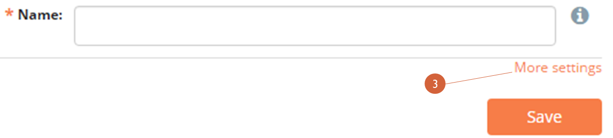

9. Submitting data: SMS¶
Forms can also be submitted via SMS. Any mobile phone with SMS capability and access to a cellular network can be used to submit data to ELMO.
Given the space limitations of texts, SMS-based forms are most powerful when designed carefully. Certain types of questionnaires, such as qualitative ones with long-text answers, are usually not a good fit. However, SMS form submission allows the easy aggregations of large amounts of data across distances without good mobile or internet coverage. It also can be cheaper per observer, and may suit certain monitoring and evaluation purposes, quantitative inquiries, or simple surveys.
9.1. SMS Form Creation¶
Creating an “SMS-able” form is similar to creating online and tablet forms, there is just one additional flag to set:
- Click the Forms menu
- Click Create New Form
- Click More settings (shown below)
- 
- Enter a name for the form
- Mark the box next to SMSable?
- If you need to forward all SMS form submissions to certain users, mark the box next to SMS Forwarding? and enter the names of the recipients in the next text box; more information on this can be found below
- If a form’s submissions need to be authenticated, mark the box next to Authenticate SMS? (more information on SMS authentication can be found below)
- Click Save

Once the form is published, an accompanying guide for observers is also generated by ELMO. The “SMS Composition Guide” provides observers with instructions for sending SMS responses, including a unique code for the form. To view the guide:
- Click on the Forms menu
- Click on the form
- Click on View SMS Guide
An example of the guide is shown below:

New to Version 5.8 is the ability to submit an SMS response that can be relayed out to a selected group of people. The feature allows users to be placed into groups that can be alerted that a submission has been made to ELMO. This ability is called SMS Forwarding. If the SMS Forwarding? box is checked, a copy of each SMS submission will be sent via SMS to all users entered in the box SMS Forward Recipients.
An example of an appropriate situation to use SMS Forwarding is: A team wants to receive an alert when an incident form is submitted to the system. The incident form is not a regular submission (one may be submitted once every few days or less), so there may not be someone logged into the system to see it submitted. When an incident is reported, it is important to alert an entire group of responders that something is going on. Thus SMS Forwarding should be enabled for this form.
9.2. SMS Authentication¶
SMS Authentication is a feature that adds an extra measure of protection against outside users from submitting forms to ELMO. Normally, ELMO only accepts submissions that come from observers with their phone numbers pre-registered in the system. Our SMS Authentication feature, when enabled, works by requiring observers to provide an additional code when submitting forms via SMS.
This four-character code is randomly assigned and unique to each user. It is generated when an account is created. The code can be found by clicking on the Users menu and then on the name of the user.

To generate a new authentication code:
- Click Edit User
- Click Regenerate
- Click Save
Ideally, authentication codes should never be written down. Users should memorize their codes. If a user forgets their code, an administrator should generate a new one for them.
Activating SMS authentication adds extra security to ELMO by ensuring that the registered phone number and the authentication code belong to the same user. All SMS submissions that do not meet both these conditions are rejected.
9.3. Submitting SMS responses¶
To submit forms to ELMO via SMS, the following is required:
- Mobile phone
- Phone credit
- SMS-able ELMO form with three letter unique code listed in the SMS Composition Guide
- ELMO number
To submit a form:
- Choose a form to submit; only one form at a time can be submitted per SMS
- Compose an SMS to the ELMO number:
- Begin your message with the three letter unique code, followed by
a space
- If SMS authentication is required, type the authentication code
first, then a space, then the form code

- If SMS authentication is required, type the authentication code
first, then a space, then the form code
- Type the number of the question being answered, followed by the answer selected
- Type a space, followed by the next answer
- Repeat step 3 until all questions have been answered
- If not answering a question, skip that question number and answer in the SMS. For example, if question 4 were not being answered, the message would look like this: xyz 1.a 2.f 3.Ituri 5.20150815 6.a
- Send the message
- Begin your message with the three letter unique code, followed by
a space